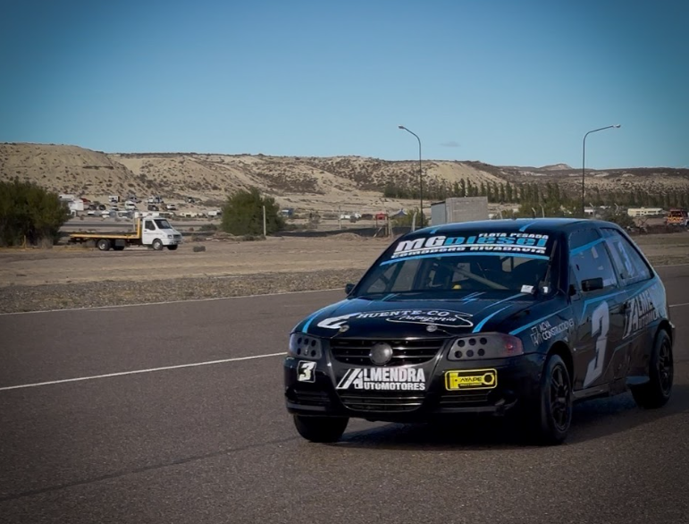

El automovilismo zonal vuelve a Mar y Valle para disputar la tercera fecha

El automovilismo zonal chubutense volverá a acelerar este fin de semana en el autódromo Mar y Valle de Trelew, donde se disputará la tercera fecha del campeonato provincial con actividad para la Monomarca R12, TP Gol 1.6, TP 1100, TC Austral y TC Patagónico.
La competencia se desarrollará sobre el trazado corto de 2747 metros, un circuito que suele entregar carreras ajustadas y con diferencias mínimas entre los protagonistas, especialmente en las categorías de menor cilindrada.
La última presentación del zonal fue en el autódromo General San Martín de Comodoro Rivadavia, donde los vencedores fueron Abel Panquilto en la Monomarca R12, Javier Hernández en TC Austral, Arian Gómez en TP Gol 1.6, Luciano Matazmala en TP 1100 y Axel Oliver en TC Patagónico.
En la Monomarca R12, Sebastián Marsicano llega como líder del campeonato con 73 puntos, seguido por Marcos Panquilto con 62 y Gianfranco Mesitti con 59. Abel Panquilto, ganador de la última final en Comodoro, aparece cuarto con 57 unidades.
En el TP 1100, Luciano Matazmala encabeza el certamen con 68 puntos, apenas por delante de Santiago Acevedo con 65 y Pablo Arabia con 64.
Por el lado del TP Gol 1.6, Nicolás Vales lidera con 65 unidades, escoltado por Arian Gómez con 63 y Daniel Miranda con 52.
En el TC Austral, Miguel Otero manda en el campeonato con 78 puntos, seguido por Javier Hernández con 67 y Javier Figueroa con 61.
Finalmente, en el TC Patagónico, Emanuel Abdala llega al frente con 72 unidades, mientras que Emiliano López suma 71 y Axel Oliver 67.
Todo está dado para un nuevo fin de semana de gran espectáculo en el automovilismo zonal chubutense, en un campeonato que recién comienza pero que ya muestra peleas intensas en cada categoría.
Cronograma del fin de semana
Viernes 8 de mayo
Administrativa y técnica: de 9:00 a 17:00.
Entrenamientos
- TP 1100: 13:00 a 13:10 / 14:20 a 14:30 / 15:40 a 15:50
- TP Gol 1.6: 13:15 a 13:25 / 14:35 a 14:45 / 15:55 a 16:05
- TCP: 13:30 a 13:45 / 14:50 a 15:05
- TCA: 13:50 a 14:00 / 15:10 a 15:20 / 16:10 a 16:20
- R12: 14:05 a 14:15 / 15:25 a 15:35 / 16:25 a 16:35
Sábado 9 de mayo
Verificación técnica y administrativa: desde las 9:00.
Entrenamientos
- R12: 9:00 a 9:10
- TCA: 9:15 a 9:25
- TCP: 9:30 a 9:40
- TP Gol 1.6: 9:45 a 9:55
- TP 1100: 10:00 a 10:10
Clasificación
- R12: 10:30 a 10:55
- TCA: 11:00 a 11:10
- TCP: 11:15 a 11:25
- TP Gol 1.6: 11:30 a 11:55
- TP 1100: 12:00 a 12:40
Series - 6 vueltas
- R12: 13:30 y 13:55
- TCA: 14:20
- TCP: 14:50
- TP Gol 1.6: 15:15 y 15:40
- TP 1100: 16:05, 16:30 y 16:55
Domingo 10 de mayo
Tanques llenos
- R12: 9:50 a 10:00
- TCA: 10:05 a 10:15
- TCP: 10:20 a 10:30
- TP Gol 1.6: 10:35 a 10:45
- TP 1100: 10:50 a 11:00
Finales
- R12: 12:00 - 16 vueltas / 30 minutos
- TCA: 13:00 - 16 vueltas / 30 minutos
- TCP: 14:00 - 16 vueltas / 30 minutos
- TP Gol 1.6: 15:00 - 16 vueltas / 30 minutos
- TP 1100: 16:00 - 16 vueltas / 30 minutos
Podios: 16:30.